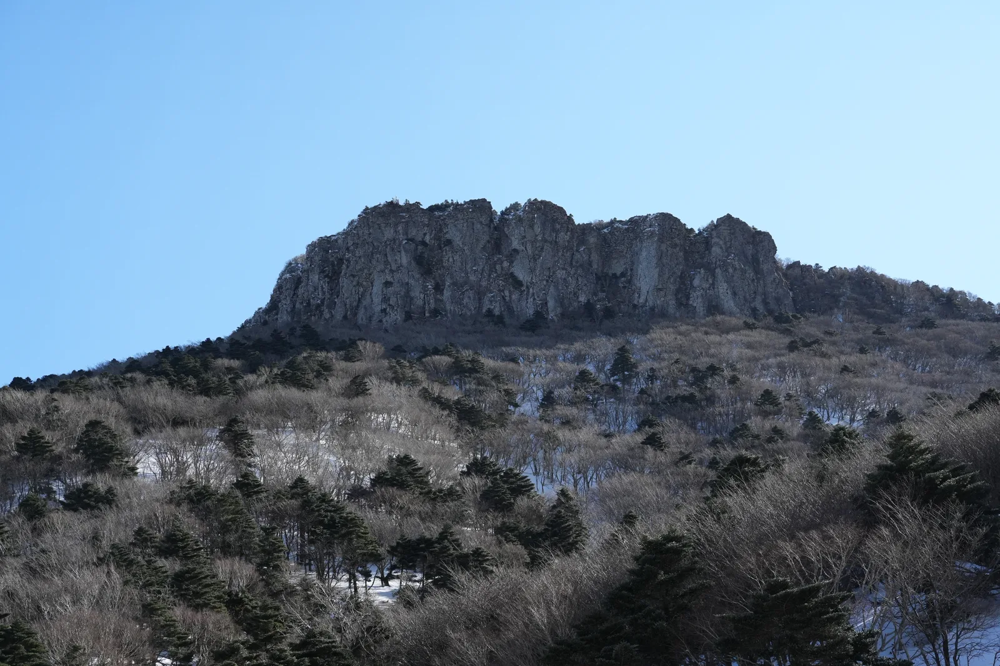
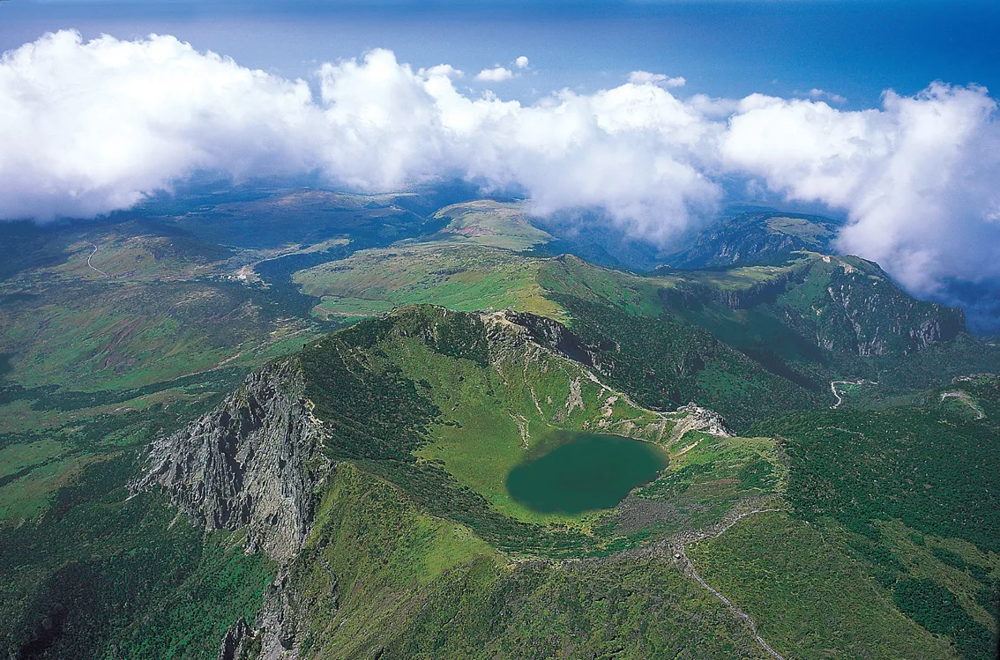
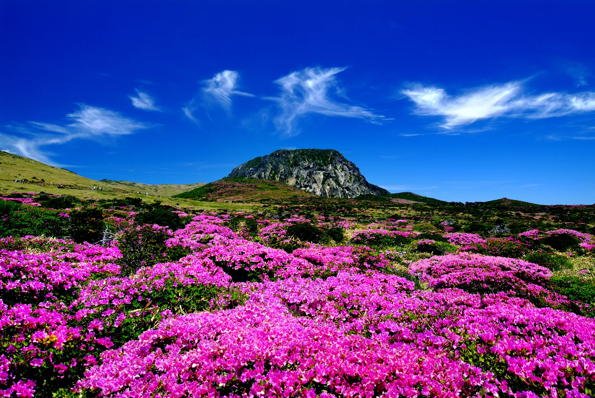

▲ 한라산 정상의 이정표. 성판악 9.6km, 관음사 8.7km 거리가 표시돼 있다(겨울 촬영) ⓒ Sadopaul, Wikimedia Commons (CC BY 4.0)
한라산에 자차로 가려는 사람이라면 올해 바뀐 두 가지를 알고 가야 한다. 하나는 예약이 완화됐다는 것, 다른 하나는 주차비가 대폭 인상됐다는 것이다. 방향이 정반대인 두 변화가 같은 시기에 겹쳤다.
지금 가려는 분이라면 이것부터 제주도 세계유산본부는 관음사 탐방로 낙석방지시설 보수와 위험구간 데크 전면 교체 공사를 이유로 2026년 8월 1일부터 9월 30일까지 삼각봉~백록담 구간 입산을 전면 통제하고 있다. 우회 탐방로를 낼 수 없는 구간이라 통제 외에는 방법이 없다는 것이 제주도 설명이다. 이 기간에 백록담을 밟으려면 성판악 코스를 택해야 한다.
1. 예약 — 백록담에 갈 때만 필요해졌다

▲ 관음사 코스의 삼각봉 대피소. 여기까지는 예약 없이 오를 수 있고, 이 위 백록담 구간부터 예약이 필요하다(겨울 촬영) ⓒ Sadopaul, Wikimedia Commons (CC BY 4.0)

▲ 관음사 코스 삼각봉 위쪽의 왕관봉. 이 구간이 2026년 8~9월 낙석방지시설 보수공사로 통제된 정상행 구간이다(겨울 촬영) ⓒ Sadopaul, Wikimedia Commons (CC BY 4.0)
제주도는 2021년 1월부터 성판악(9.6km)과 관음사(8.7km) 탐방로 전 구간에 예약제를 적용해 하루 탐방객을 성판악 1,000명, 관음사 500명으로 제한해왔다. 그러다 2025년 5월 3일부로 예약 구간을 정상부로 축소했다. 이제 성판악에서 진달래밭(7.3km)까지, 관음사에서 삼각봉(6km)까지는 예약 없이 자유롭게 오를 수 있다.
다만 그 위쪽, 즉 진달래밭에서 백록담까지(2.3km)와 삼각봉에서 백록담까지(2.7km) 구간은 기존처럼 예약이 필요하다. 여기서 흔히 오해하는 부분이 있는데, 예약 구간이 줄었을 뿐 정원이 줄어든 것은 아니다. 정상부 일일 예약 정원은 예약제 완화 이후에도 성판악 1,000명, 관음사 500명이 그대로 유지되고 있다.
예약자는 홈페이지에서 예약을 마치면 입력한 전화번호로 입·하산 QR코드가 전송된다. 정상부 통제소에서 이 QR코드를 제시해야 진입이 허용된다. 어리목, 영실, 돈내코, 어승생악, 석굴암 코스는 애초에 예약 대상이 아니다.
예약 후 취소하지 않고 나타나지 않으면 페널티가 붙는다. 1회 위반 시 3개월, 2회 위반 시 1년간 예약이 제한된다. 일행 중 일부만 못 가게 됐다면 탐방 종료 시간 전에 부분 취소를 해야 한다.
한라산탐방 예약시스템에서 예약하기2. 주차 — 1,800원에서 최대 13,000원으로

▲ 한라산국립공원 탐방로의 위치 표시판. 긴급 상황 시 이 번호로 위치를 알릴 수 있다(겨울 촬영) ⓒ Sadopaul, Wikimedia Commons (CC BY 4.0)
자차 이용자에게 실질적으로 더 큰 변화는 주차 요금이다. 2026년 1월 1일부터 한라산국립공원 공영주차장 요금 체계가 1일 정액제에서 시간 가산요금제로 바뀌었다. 기존 요금은 1998년 이후 27년간 동결돼 있었다. 새 체계는 성판악·관음사·어리목·영실 등 한라산국립공원 내 탐방로 입구 주차시설 전체에 같은 기준으로 적용된다.
| 구분 | 기본요금(최초 1시간 이내) | 가산요금 | 1일 최대 |
|---|---|---|---|
| 소형(경차·승용) | 1,000원 | 20분마다 500원 | 13,000원 |
| 중형·대형 | 2,000원 | 20분마다 800원 | 20,000원 |
| 변경 전(~2025년) | 1일 정액 | 1,800원 | |
※ 성판악·관음사·어리목·영실 등 한라산국립공원 탐방로 입구 주차시설 공통 적용. 출처: 한라산탐방 예약시스템 이용요금 안내
계산해보면 상한에 닿는 데 오래 걸리지 않는다. 소형차 기준 최초 1시간 1,000원 이후 20분당 500원이므로 시간당 1,500원씩 붙는다. 대략 9시간이면 13,000원 상한에 도달한다.
문제는 한라산 등반이 코스 특성상 그 시간을 쉽게 넘긴다는 점이다. 성판악은 편도 9.6km에 약 4시간 30분, 관음사는 8.7km에 삼각봉까지 편도 3시간 20분, 정상까지 편도 5시간으로 왕복 10시간이 걸리는 코스다. 하루 종일 차를 세워두는 것이 사실상 전제인 만큼, 정액제에서 시간제로의 전환은 곧 정상을 다녀오는 대부분의 등반객이 상한액을 그대로 내게 된다는 뜻이다.
한라산국립공원 이용요금 안내에서 확인하기주차장 규모 — 성판악은 156대뿐이다
| 주차장 | 주차 가능 | 내역 |
|---|---|---|
| 성판악 | 156대 | 대형 5, 일반 131, 장애인 5, 경형 8, 전기차 7 |
| 성판악 대체(5·16도로변) | 199대 | 제주국제대학교 인근 |
| 관음사 | 192대 | 대형 20, 일반 158, 장애인 5, 전기차 9 |
성판악 주차장은 156면에 불과하다. 정상 예약 정원이 하루 1,000명인데 주차면은 156면이니, 주말 성수기에는 새벽에 도착하지 않으면 본 주차장에 대기 어렵다. 만차 시에는 5·16도로변 대체 주차장(199면)을 이용하고 셔틀·도보로 접근해야 한다. 한라산국립공원이 공식 안내에서 대중교통 이용을 권하는 이유도 여기에 있다.
3. 코스별 거리와 시간

▲ 여름철 백록담 분화구 항공 사진. 분화구 바닥에 물이 고여 있다 ⓒ LG전자, Wikimedia Commons (CC BY 2.0)
| 코스 | 거리 | 소요시간 | 예약 |
|---|---|---|---|
| 성판악 | 9.6km (입구→진달래밭 7.3 →정상 2.3) | 편도 약 4시간 30분 | 진달래밭 이후 필요 |
| 관음사 | 8.7km (입구→삼각봉 6 →정상 2.7) | 삼각봉 편도 3시간 20분 정상 편도 5시간 / 왕복 10시간 | 삼각봉 이후 필요 9월 30일까지 정상 통제 |
| 어리목·영실 | - | 왕복 서너 시간 | 불필요 |
| 어승생악·돈내코·석굴암 | - | - | 불필요 |
백록담 정상을 목표로 하지 않는다면 어리목이나 영실 코스가 시간·비용 면에서 부담이 적다. 정상 인증이 목적이 아니라 한라산의 풍경을 보는 것이 목적이라면, 예약 절차와 긴 주차 시간을 모두 피할 수 있는 선택지다.
계절별 입산 통제 시각 — 늦게 도착하면 아예 못 올라간다
한라산은 당일 탐방이 원칙이다. 일몰 전 하산이 완료되도록 계절별로 입산 시각과 통제 시각이 정해져 있고, 이 시각을 넘기면 주차장까지 갔어도 되돌아와야 한다. 자차 출발 시각을 잡을 때 가장 먼저 봐야 할 표다.
| 구분 | 통제 장소 | 동절기(10~3월) | 하절기(4~9월) |
|---|---|---|---|
| 입산 마감 | 성판악 탐방로 입구 | 11:30 | 12:30 |
| 관음사 탐방로 입구 | 11:30 | 12:30 | |
| 진달래밭·삼각봉 통제소 | 11:30 | 12:30 | |
| 어리목·영실 입구 | 12:00 | 15:00 | |
| 하산 마감 | 동능정상(백록담) | 13:30 | 14:30 |
| 진달래밭·삼각봉 대피소 | 15:30 | 16:30 | |
| 윗세오름 | 15:00 | 17:00 |
※ 입산 개시 시각은 동절기(11~2월) 06:00, 춘추절기(3~4월·9~10월) 05:30, 하절기(5~8월) 05:00. 출처: 한라산탐방 예약시스템 예약안내
표에서 눈여겨볼 곳은 진달래밭·삼각봉 통제소 마감 시각이다. 탐방로 입구를 제시간에 통과했더라도 하절기 12시 30분, 동절기 11시 30분까지 이 통제소에 닿지 못하면 정상 방향으로는 진입할 수 없다. 성판악 입구에서 진달래밭까지 7.3km를 3시간 안팎에 올라야 하는 셈이니, 주차장 도착 목표는 늦어도 오전 8시로 잡는 편이 안전하다. 만차로 대체 주차장까지 밀릴 여지까지 감안하면 더 이르게 잡아야 한다.
또 한라산은 설날과 추석 당일이 휴식일이라 탐방 자체가 불가능하고, 기상특보(호우·태풍·대설 주의보 이상) 시에는 전면 또는 부분 통제된다. 출발 전 한라산국립공원 홈페이지에서 통제 여부를 확인하는 절차가 사실상 필수다.
4. 예약은 언제, 어떻게

▲ 한라산 백록담 분화구(겨울 촬영). 정상부에 오르려면 사전 예약과 QR 인증이 필요하다 ⓒ Sadopaul, Wikimedia Commons (CC BY 4.0)

▲ 봄철 한라산 고지대의 철쭉·진달래 군락과 백록담 정상부. 예약 없이 오를 수 있는 진달래밭 일대가 이 고도대에 있다 ⓒ Korea.net / Korean Culture and Information Service, Wikimedia Commons (CC BY-SA 2.0)
예약은 한라산탐방 예약시스템(visithalla.jeju.go.kr)에서 진행한다. 오픈 시점은 매월 첫 업무개시일 오전 9시이며, 이때부터 다음 달 말일까지의 이용분을 한꺼번에 신청할 수 있다. 여기서 '첫 업무개시일'은 1일이 공휴일이나 주말이면 그만큼 밀린다는 뜻이다. 예를 들어 5월 탐방분은 4월 1일이 아니라 4월 첫 평일 09시에 열린다. "탐방일 1개월 전"이라는 설명이 돌아다니지만, 정확히는 날짜 단위가 아니라 월 단위로 한 번에 열리는 방식이다.
일일 정원은 성판악 1,000명, 관음사 500명이다. 예약을 마치면 입력한 전화번호로 입·하산 QR코드가 발송되므로 전화번호를 정확히 적어야 한다. 개인정보를 입력하지 않으면 미완료 예약으로 남고 하루가 지나면 자동 취소된다. 대기(예약의 예약) 시스템은 없다.
다만 앞서 짚은 대로 2026년 9월 30일까지는 관음사 정상 구간이 통제 중이므로, 이 기간 백록담 예약은 성판악 코스로만 가능하다.
| 항목 | 내용 |
|---|---|
| 예약 오픈 | 매월 첫 업무개시일 09:00 (다음 달 말일 이용분까지) |
| 일일 정원 | 성판악 1,000명 / 관음사 500명 |
| 인증 방식 | 예약 시 문자로 받은 입·하산 QR코드 제시 |
| 노쇼 페널티 | 1회 3개월 / 2회 1년 예약 제한 |
| 전화 문의 | 평일 09:00~17:30 (주말·공휴일은 홈페이지) |
5. 정리
체크포인트
- 백록담까지 갈 게 아니라면 예약 없이 성판악 진달래밭·관음사 삼각봉까지 오를 수 있다.
- 정상부는 여전히 예약 대상이며, 예약 시 문자로 받은 입·하산 QR코드 제시가 필수다.
- 2026년 1월부터 주차가 시간제로 바뀌었다. 소형 시간당 1,500원꼴, 9시간이면 상한 13,000원이다. 장시간 등반이 전제인 코스라 사실상 상한액을 낸다.
- 2026년 9월 30일까지 관음사 삼각봉~백록담 구간은 통제 중이다. 정상은 성판악으로만 갈 수 있다.
- 성판악 주차장은 156면뿐이다. 만차 시 5·16도로변 대체 주차장(199면)을 써야 한다.
- 하절기 기준 진달래밭·삼각봉 통제소 12:30이 정상행 마지노선이다. 주차장 도착은 오전 8시 이전을 권한다.
- 시간·비용을 줄이려면 어리목·영실 코스가 대안이다.
- 예약은 매월 첫 업무개시일 09시 오픈, 정원은 성판악 1,000명·관음사 500명이다.
문의는 한라산탐방 예약시스템 고객센터 064-713-9953, 어리목본소 064-713-9950~1, 성판악지소 064-725-9950이다.